The longer story
Bangalore, via the Malabar Coast
I come from the Malabar coast, the land of lores and looms, where art, culture and gods are woven into everyday life.
Growing up around that is what first drew me to art and design: work that carries its roots with it.
Ambivert. Objective. Inquisitive. Resilient.
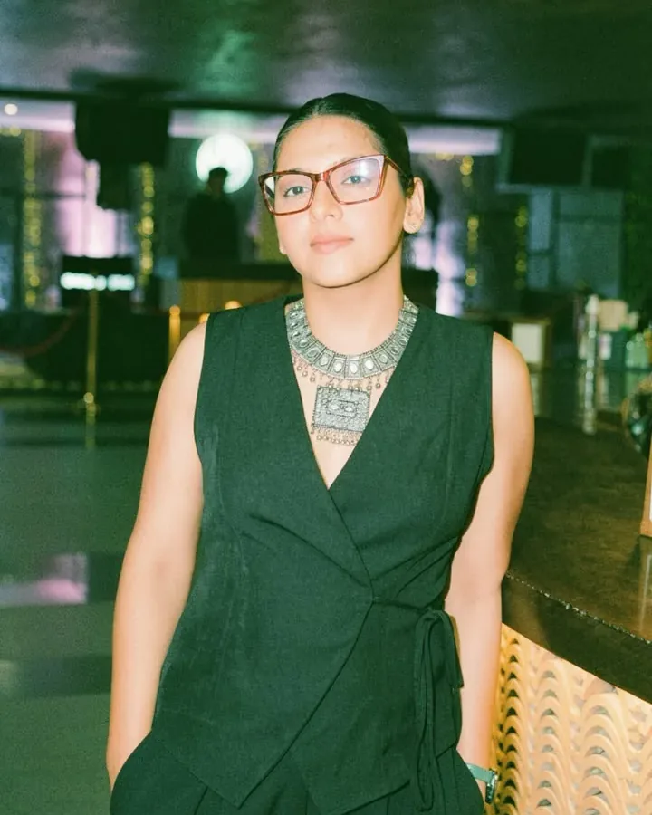
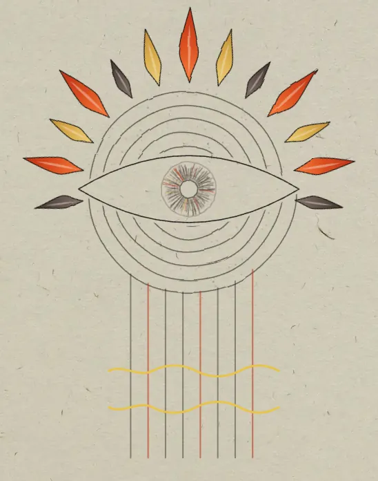
Other minds
I'm drawn to other cultures, other minds and other ways of seeing the things around me.
If I had one superpower, I'd read minds.
Since I can't, I settled for the next best thing: a deep fascination with psychology and human behaviour.
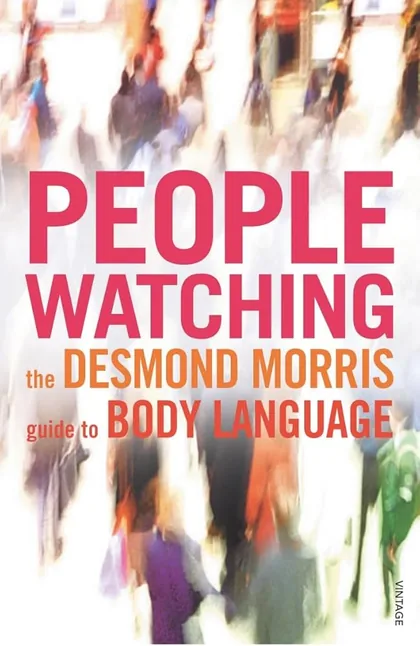
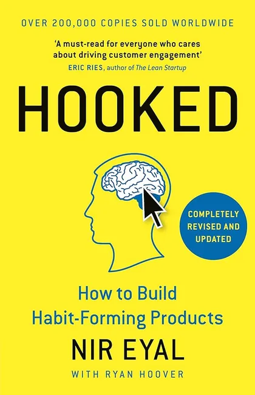
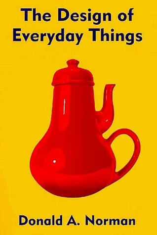
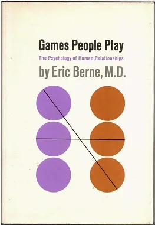
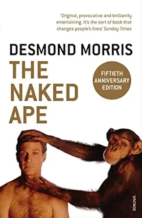
Books that help me think, and see the world around me better.
The lab
Science taught me rigour, structure and how to think seriously about a problem. I was a research intern at the Indian Institute of Science, research at its strictest. It sharpened me, but the lab never made me happy.
Azim Premji Foundation
I taught children in government schools in Pithoragarh, a remote corner of the Himalayas, and saw rural education up close. I learned that institutions work best when they support the ecosystem that already exists. It opened my eyes to the world.
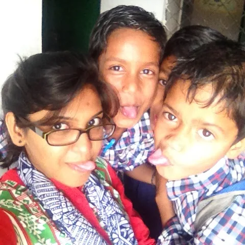
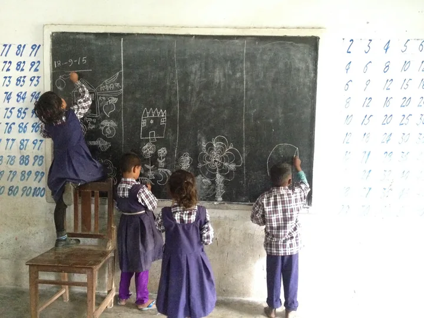
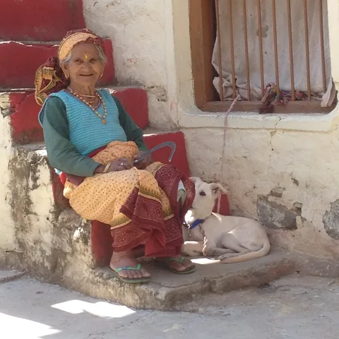
The jump
You can't connect the dots looking forward; you can only connect them looking backwards. So you have to trust that the dots will somehow connect in your future.
Leaving science for design was exactly that kind of trust.
Travel
To absorb what's around me, and to collect memories, conversations and experiences that keep widening my horizon.
The two things a designer needs most: the ability to observe, and the ability to see another perspective without bias. Travel keeps those muscles strong.
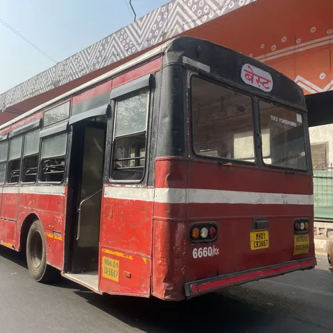
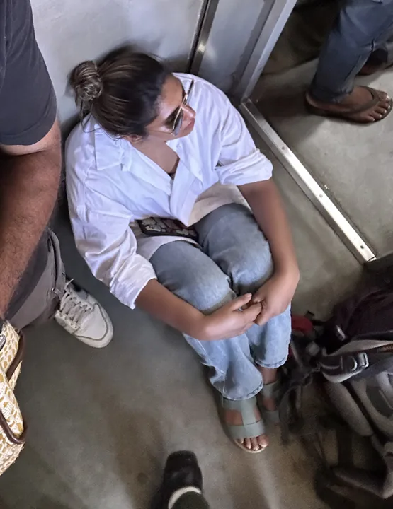
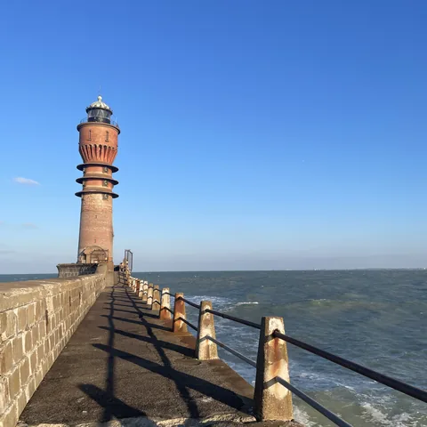
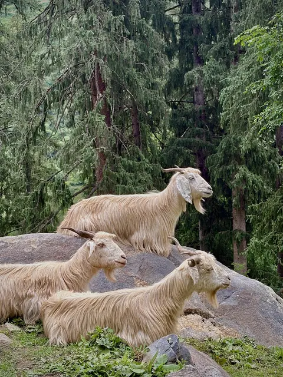
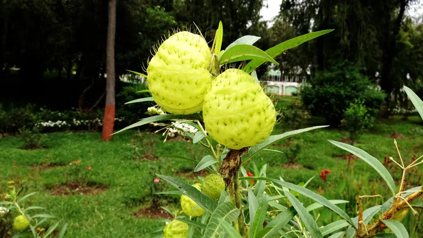
The general compartment, a public bus, the busy streets of India. That is where I go to understand people deeply.
Looking back
Science gave me
Structure
My roots gave me
An eye for art and culture
People gave me
Empathy
In a world overflowing with products, some quietly stand out because of the thought and care behind them. That's the kind of work I want to make, and every detour I've taken is part of how I'll make it.
That's my story so far.
I am a sucker for human behaviour and psychology. These are some of the books which have changed the way I look at people.
Open to product design roles and contract work.
Download resume